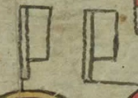
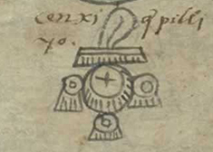
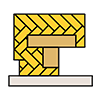

手抄本
如何阅读
《贡品清单》的前两页——第1张纸的正、反面，不仅有破损，而且难以解读。它们不遵循文档其余部分中的视觉布局。它们被红线细分，并且包含许多显示人脸的字形。第1张纸正面幸存下来的内容描绘了两对地点——下方的奥兹特玛 (Oztoma) 和波克特佩克 (Poctepec)，上方的佐佐兰 (Çoçolan) 和瓦哈卡克 (Huaxacac) ——以及代表这些地点总督的人头符号。 第 1v 对开页的底部描绘了另外一对地点（阿特兰 (Atlan) 和特萨波蒂特兰 (Teçapotitlan)），页面顶部描绘了另外两个单一地点（阿特萨坎 (Atzacan) 和索科诺奇科 (Soconusco) 及其总督）。 值得注意的是，这些地点中的大多数（奥兹特玛和波克特佩克、佐佐兰和瓦哈卡克、阿特兰和特卡波蒂特兰、索科诺奇科）都位于阿兹特克帝国的外围边缘。 阿萨坎 (Atzacan) 夹在两个王国（特拉斯卡拉和特奥蒂特兰 (Teotitlan)）之间，这两个王国一直保持着独立于阿兹特克人的地位。换句话说，《贡品清单》最初对开页上描绘的地方可能代表了不同类型的边境前哨城邦。 这些地点都位于帝国境内相对较远的地方，代表了三国联盟在被征服地区驻军的城市。《门多萨手抄本》中提供了类似的内容。其记录较为完整，共有11个驻军的城邦。
城邦符号
城邦符号
城邦符号
城邦符号
总督
总督
总督
从第3页开始，手抄本列出了三国联盟征服的城邦列表以及每个城邦所缴纳的贡品。 第2张纸正面（其中幸存的部分）显示了特诺奇蒂特兰（左）和特拉特洛尔科（右）的标志，这两个城市共享特斯科科湖中心的岛屿。 在这些城市之间画有四位十五世纪的统治者，其中两位来自特诺奇蒂特兰，两位来自特拉特洛尔科。 他们成对出现：征服特拉特洛尔科的阿兹特克统治者和战败的特拉特洛尔科统治者。 对特拉特洛尔科（阿兹特克统治者伊兹柯阿特尔 (Itzcoatl)）的第一次征服似乎让特拉特洛尔科的特拉托尼（统治者）继续掌权。 第二次征服（由阿兹特克统治者阿哈雅卡特尔发起 (Axayacatl)）是永久性的：特拉托阿尼不再被允许统治特拉特洛尔科。 页面顶部显示特拉特洛尔科必须向特诺奇蒂特兰上贡。
最后，从第2张反面开始，《贡品清单》的图像遵循标准布局。 每一页都专门介绍一个上贡省，但第8张正面除外，它描绘了两个省份（马琳纳科 (Malinalco) / 霍科蒂特兰 (Xocotitlan)），而第10张反面则描绘了三个省份（特拉尔科萨乌蒂特兰 (Tlalcoçauhtitlan) / 奎阿乌特奥潘 (Quiauhteopan) / 约阿特佩克 (Yoaltepec)）。 每页的阅读从左下角开始。 一系列表示城邦的符号沿着每页的下边缘从左到右延伸，如有必要，还可以沿着右侧边缘继续向上。
上贡品清单
城邦符号
显示的第一个城邦（即左下角描绘的城邦）是每个上贡省的主要城镇，上贡省也以此命名。 每页的大部分空间都绘制满了所列城镇预计发送到特诺奇蒂特兰的贡品图片，大概每 80 天发送一次。 许多描绘的物体绘画（金粉碗、蜂蜜罐、美洲豹皮）都标有数字符号。 这些表明需要多少此类物品。 一面白色旗代表 20 个，一根黑白羽毛代表 400 个，一个白色袋子代表 8000 个。这些贡品在每页上的阅读顺序尚不清楚。 对于我们在这里的演示，我们决定沿着回形路线阅读它们：从左到右，然后从右到左，然后再次从左到右。 这是前西班牙时代美索美洲人以及古希腊人所熟知的阅读顺序，古希腊人将其称为“boustropedon”，“就像牛犁地一样”。
古代美索美洲人使用基于 20 的计数系统。 在纳瓦特语书写系统中，抄写员使用字形符号来表示数字。它们出现在手抄本的贡品页面上，以表明所需的贡品数量。下面列出了手抄本中出现的数字的字形。
 |
 |  |
 |
|---|---|---|---|
20以内的数字表示方法。每个黑点代表数字 1。 |
旗帜的符号。一面旗帜代表数字20。 |
羽毛（或头发）的符号。 一根羽毛代表数字400。 |
香袋或袋子的符号。一个香代表数字8000。 |
页面目录
Imperial Outposts
PAGE 01
FOLIO 1R

Imperial Outposts
PAGE 02
FOLIO 1V

Tribute of
Tlatelolco
PAGE 03
FOLIO 2R

Tribute of
Petlacalco
PAGE 04
FOLIO 2V

Tribute of
Acolhuacan
PAGE 05
FOLIO 3R

Tribute of
Quauhnahuac
PAGE 06
FOLIO 3V

Tribute of
Huaxtepec
PAGE 07
FOLIO 4R

Tribute of
Quauhtitlan
PAGE 08
FOLIO 4V

Tribute of
Hueypuchtlan
PAGE 09
FOLIO 5R

Tribute of
Atotonilco
PAGE 10
FOLIO 5V

Tribute of
Xilotepec
PAGE 11
FOLIO 6R

Tribute of
Quahuacan
PAGE 12
FOLIO 6V

Tribute of
Tulucan
PAGE 13
FOLIO 7R

Tribute of
Ocuilan
PAGE 14
FOLIO 7V

Tribute of
Malinalco
Tribute of
Xocotitlan
PAGE 15
FOLIO 8R

Tribute of
Tlachco
PAGE 16
FOLIO 8V

Tribute of
Tepequacuilco
PAGE 17
FOLIO 9R

Tribute of
Cihuatlan
PAGE 18
FOLIO 9V

Tribute of
Tlapan
PAGE 19
FOLIO 10R


Tribute of
Tlacozauhtitlan
Tribute of
Quiauhteopan
Tribute of
Yoaltepec
PAGE 20
FOLIO 10V

Tribute of
Chalco
PAGE 21
FOLIO 11R

Tribute of
Tepeyacac
PAGE 22
FOLIO 11V

Tribute of
Coixtlahuacan
PAGE 23
FOLIO 12R

Tribute of
Coyolapan
PAGE 24
FOLIO 12V

Tribute of
Xoconochco
PAGE 25
FOLIO 13R

Tribute of
Quauhtochco
PAGE 26
FOLIO 13V

Tribute of
Cuetlaxtlan
PAGE 27
FOLIO 14R

Tribute of
Tlapacoyan
PAGE 28
FOLIO 14V

Tribute of
Tlatlauhquitepec
PAGE 29
FOLIO 15R

Tribute of
Tochpan
PAGE 29
FOLIO 15V

Tribute of
Atlan
PAGE 31
FOLIO 16R

Tribute of